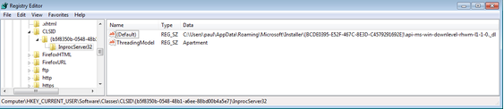

During the installation phase, the malware drops two files into the directory: %APPDATA%\Roaming\Microsoft\Installer\{BCDE0395-E52F-467C-8E3D-C4579291692E}\
The file names are created using the following scheme: api-ms-win-downlevel-[4char-random]-l1-1-0._dl
One file is the 32-bit version of the malware and the second one is the 64-bit version.
The second step: the creation of two registry entries:
- HKCU\Software\Classes\CLSID\{b5f8350b-0548-48b1-a6ee-88bd00b4a5e7}\InprocServer32
- HKCU\Software\Classes\Wow6432Node\CLSID\{BCDE0395-E52F-467C-8E3D-C4579291692E }\InprocServer32
For each entry, the default value is the path to the files that were dropped before. In the following screenshot, the file containing rhwm is the 64-bit version of the malware and the file containing dtjb was created for the 32-bit version, respectively.


The purpose of the keys is to define a COM object with the CLSIDs {b5f8350b-0548-48b1-a6ee-88bd00b4a5e7} and {BCDE0395-E52F-467C-8E3D-C4579291692E}. If these objects are instanced, the library will be loaded into the respective process. But the CLSIDs are predefined by Microsoft and the newly created owns replace the originals:
These two instances are used by a lot of applications, for example by the browser (by using the CoCreateInstance() function). With Process Explorer, we are able to list the library loaded into a specific process. Here are the loaded libraries designed for a 32-bit process:

The following screenshot shows the loaded libraries in a 64-bit process:

In both of these cases, we can see our dropped library. The processes use the registry key previously created to load the malicious library instead of the original Microsoft library
Conclusion
This new approach of persistence mechanism has several advantages: the attacker does not need to perform DLL injection, which is usually monitored by anti-virus software. Therefore, he has overcome one important security measure, in most of the cases.
As soon as the infection was successful, Microsoft Windows then natively executes the library in the processes of the infected user. Hence, the attacking process is hard to be identified. Using COM hijacking is undoubtedly silent. It is not even detected by Sysinternals’ Autoruns.
So, in our case, we have seen this mechanism being used combined with a RAT and this would mean a hassle for any infected and therefore affected user, as the attackers can spy on him pretty secretly for quite some time. But, obviously, this new persistence mechanism is not limited to the use of RATs. Attackers can combine it with any other type of malware, too!